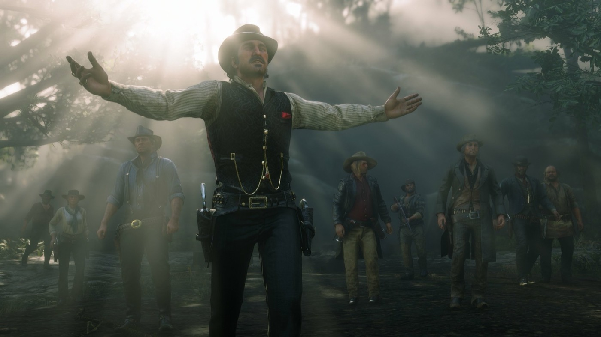
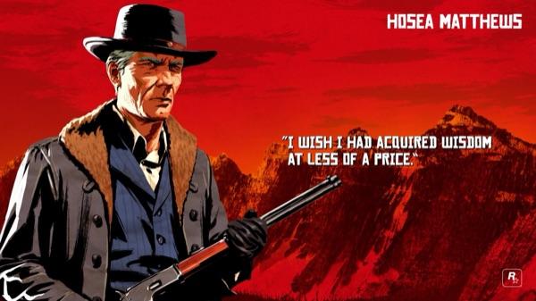
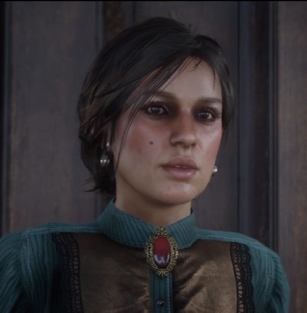
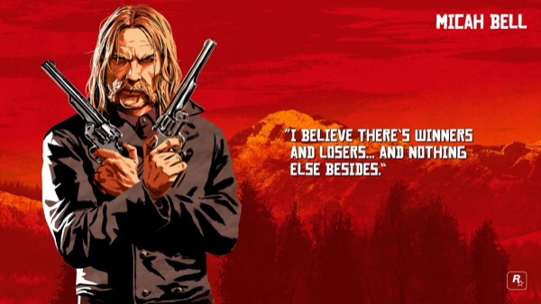
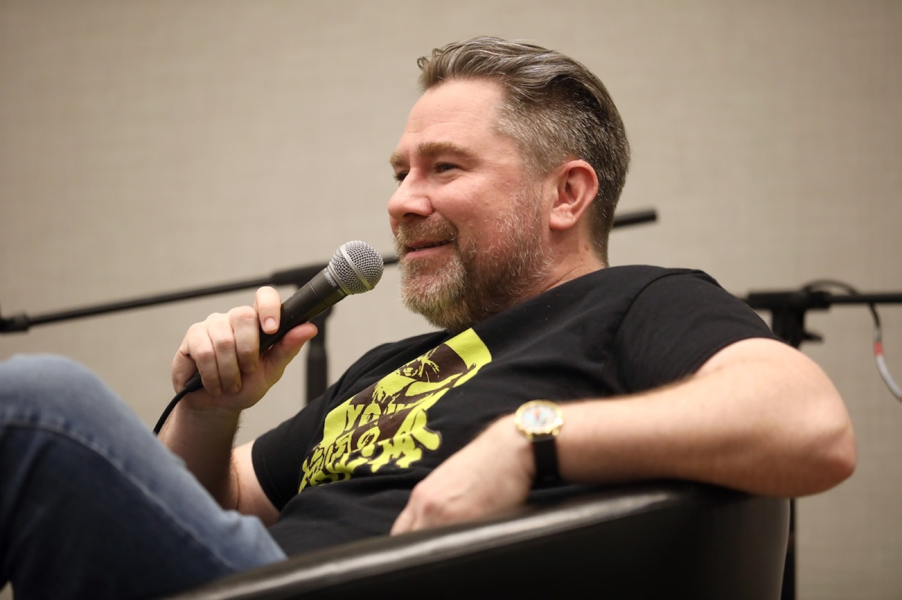
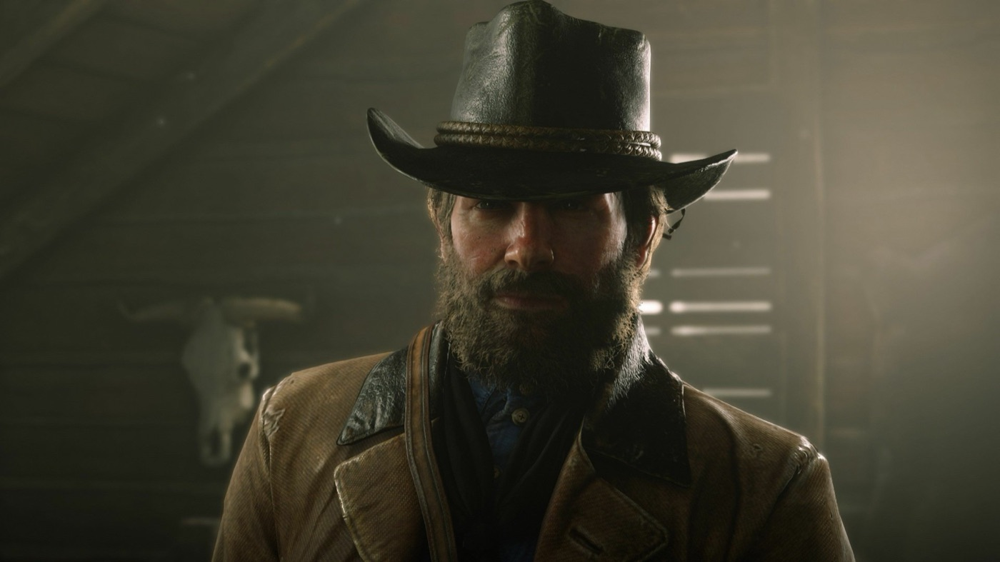
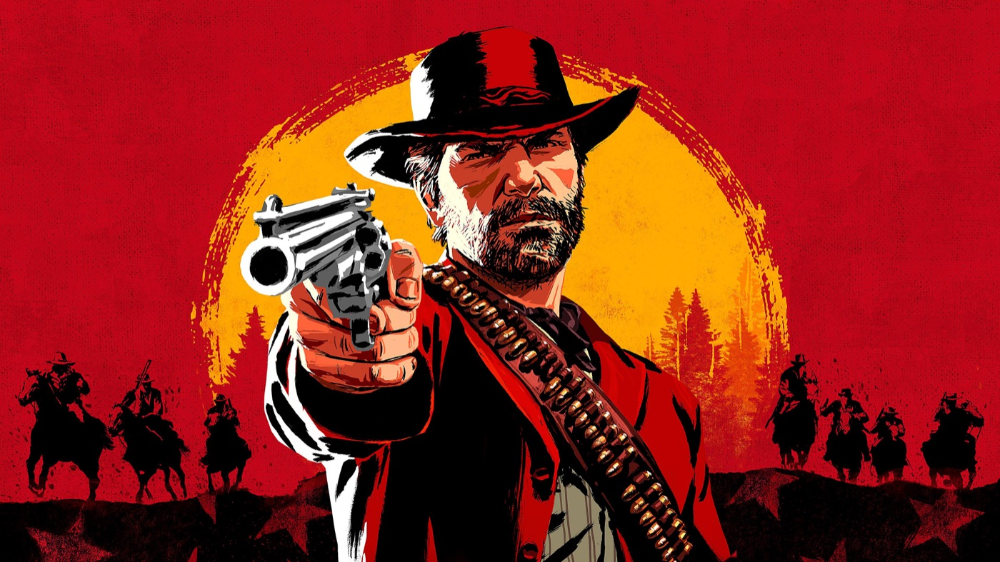

Personnage · Gang Van der Linde
Arthur Morgan
Arthur Morgan est le héros et le principal personnage jouable de Red Dead Redemption 2 (2018), le western acclamé de Rockstar Games. Homme de main expérimenté et bras droit du chef de gang Dutch van der Linde, Arthur est un hors-la-loi endurci dont la loyauté est mise à l'épreuve à mesure que le gang Van der Linde s'effondre, au fil de l'année 1899.
Son histoire, une lente remise en question de la vie qu'il a menée, est largement considérée comme l'un des plus beaux arcs de personnage du jeu vidéo. Arthur a été incarné en performance capture intégrale par Roger Clark, dont le travail a remporté le prix de la meilleure performance aux Game Awards 2018.
- Naissance
- vers 1863
- Mort
- 1899 (environ 36 ans)
- Statut
- Décédé
- Nationalité
- Américaine
- Affiliation
- Gang Van der Linde
- Rôle
- Homme de main, bras droit de Dutch
- Famille
- Lyle & Beatrice Morgan, Eliza, Isaac Morgan
- Jeux
- Red Dead Redemption 2, Red Dead Online
- Voix
- Roger Clark
Biographie
Origines et jeunesse
Arthur Morgan naît vers 1863, de Lyle et Beatrice Morgan. Sa mère meurt alors qu'il est jeune, et son père, petit criminel, est arrêté pour vol en 1874 avant de mourir, laissant Arthur orphelin. Il survit seul jusqu'à ce que, vers 1877, les hors-la-loi Dutch van der Linde et Hosea Matthews recueillent ce garçon d'environ quatorze ans. Ils lui apprennent à lire, écrire, monter à cheval, chasser et tirer, et l'élèvent comme leur premier protégé. Arthur voit en Dutch et Hosea des figures paternelles et adopte le credo de Dutch : une vie libre, affranchie de la loi et de la « civilisation ».
Un fils et un amour perdu
Dans sa jeunesse, Arthur tombe amoureux de Mary Gillis, mais leur relation échoue sur sa vie de hors-la-loi et la désapprobation de la famille de Mary. Il a aussi un fils, Isaac, avec une serveuse nommée Eliza, qu'il visite quand il le peut en leur apportant de l'argent. Eliza et Isaac sont assassinés par des bandits pour quelques dollars. Leur mort hantera Arthur toute sa vie et renforcera son attachement au gang, sa famille de substitution.
Le gang Van der Linde
En 1899, Arthur est l'un des membres les plus anciens et les plus capables du gang, son principal homme de main et le bras droit de Dutch. Il gère le recouvrement de dettes, les braquages et la protection, et encadre les plus jeunes, dont John Marston, avec qui il partage un lien fraternel, parfois rugueux, forgé sur quinze ans.

Red Dead Redemption 2 (1899)
Le jeu s'ouvre après un braquage de ferry raté à Blackwater, qui force le gang à fuir vers les montagnes enneigées. Tandis qu'ils peinent à se relever à travers la frontière, Arthur exécute les plans de plus en plus désespérés de Dutch. L'influence grandissante de Micah Bell pousse Dutch vers la paranoïa et la violence, fracturant peu à peu le gang. Arthur, longtemps le soldat loyal, commence à douter du jugement de Dutch et du prix de la vie qu'ils mènent.
La maladie
En recouvrant une dette auprès du tuberculeux Thomas Downes, Arthur reçoit sa toux en plein visage et contracte la tuberculose. La maladie, diagnostiquée à Saint-Denis, se révèle incurable. Face à sa propre mort, Arthur réévalue sa vie et tente de bien agir envers ceux qui l'entourent, aidant le peuple Wapiti et d'autres, et poussant John Marston vers un avenir loin de la vie de hors-la-loi.
Personnalité
Arthur est bourru, pragmatique et cynique en apparence, mais sous cette carapace se cache un homme réfléchi, souvent doux. Il est farouchement loyal, surtout envers Dutch et Hosea, et capable d'une vraie brutalité au service du gang ; pourtant, il est rongé par la culpabilité et par un sens du bien et du mal que le jeu laisse le joueur façonner.
Il tient un journal personnel rempli de croquis et d'écrits sincères, révélant une part introspective et lucide qu'il montre rarement aux autres. Son humour est pince-sans-rire, sa loyauté sans calcul ; son code moral, aussi inconstant soit-il, est sincère. Sa maladie incurable devient le catalyseur qui fait remonter cette décence enfouie.
Relations

Dutch van der Linde
Le chef de gang qui a élevé Arthur, et ce qui se rapproche le plus d'un père pour lui. La loyauté inébranlable d'Arthur envers Dutch est l'axe de son histoire, et la lente descente de Dutch dans la paranoïa est ce qui finit par la briser.

Hosea Matthews
L'autre figure paternelle fondatrice du gang, et sa voix de la prudence. La stabilité d'Hosea ancre Arthur, et sa mort est un tournant qui accélère l'effondrement du gang.

John Marston
Un frère cadet de substitution, élevé dans le même gang. Leur lien est mis à l'épreuve mais réel, et Arthur finit par se sacrifier pour offrir à John et sa famille une chance de vie normale.

Mary Gillis (Linton)
Le grand amour perdu d'Arthur, dont la famille n'a jamais accepté la vie de hors-la-loi. Elle réapparaît en 1899 pour lui demander de l'aide, rouvrant de vieilles blessures.
Eliza et Isaac
La jeune serveuse qu'Arthur soutenait et leur fils. Leur meurtre pour une poignée de dollars l'a marqué à jamais.

Micah Bell
Le nouveau venu manipulateur dont l'influence empoisonne Dutch et le gang. Il devient le pire ennemi d'Arthur et, dans l'une des fins, son meurtrier.

Sadie Adler
Une veuve recueillie par le gang, qui devient l'une des alliées les plus compétentes et les plus fiables d'Arthur.
Mort et destin
La fin d'Arthur dépend de l'honneur du joueur. Dans les deux cas, après avoir révélé la trahison de Micah à Dutch lors de l'effondrement final du gang à Beaver Hollow, Arthur est mortellement affaibli par la tuberculose et par l'ultime affrontement.
Un Arthur au grand honneur, ayant aidé John à s'échapper, meurt paisiblement à l'aube, en regardant le lever du soleil. Un Arthur au faible honneur est achevé par Micah Bell. Le jeu souligne son état moral par une imagerie récurrente : un cerf pour l'Arthur racheté, un loup pour l'Arthur amer. Dans tous les cas, sa mort offre à John Marston et à sa famille leur liberté, un fil que le premier Red Dead Redemption (2010) viendra plus tard dénouer. Après la mort d'Arthur, l'épilogue du jeu se joue dans la peau de John Marston, qui devient le second personnage jouable.
Coulisses

Arthur a été incarné par Roger Clark en performance capture intégrale : Clark a fourni à la fois la voix, le jeu facial et le jeu corporel, et non la seule voix. Né dans le New Jersey et élevé en Irlande, Clark s'est inspiré des grands acteurs de westerns pour la diction du personnage.
Le scénariste Dan Houser a expliqué que l'équipe avait délibérément pris le contre-pied de l'arc habituel du héros qui se renforce : Arthur est redoutable dès le départ, et c'est au contraire intellectuellement et moralement qu'il est démonté, à mesure que sa vision du monde s'effondre. Arthur est aussi brièvement jouable dans les missions d'introduction de Red Dead Online.
Accueil et héritage
Arthur Morgan a été salué par une large acclamation critique et figure régulièrement parmi les plus grands personnages du jeu vidéo. La critique a loué la finesse de son écriture et son arc de rédemption, plusieurs comparant son histoire à une tragédie shakespearienne.
La performance de Roger Clark a remporté le prix de la meilleure performance aux Game Awards 2018 et lui a valu une nomination aux BAFTA Games Awards (catégorie Performer). Chez les joueurs, la popularité d'Arthur en est venue à rivaliser avec, et pour beaucoup à dépasser, celle de John Marston, le héros du premier Red Dead Redemption.
Anecdotes
- Arthur tient dans le jeu un journal détaillé de croquis et de notes qui fait office de journal intime.
- En tant que personnage joueur, son honneur monte ou descend selon les actions du joueur et détermine la tonalité de sa scène finale.
- Son poids varie selon la façon dont le joueur le nourrit, et sa tuberculose modifie progressivement son apparence au fil de l'histoire.
- Il est l'un des très rares héros de Rockstar à mourir au sein même de l'histoire qu'il porte.
Galerie

